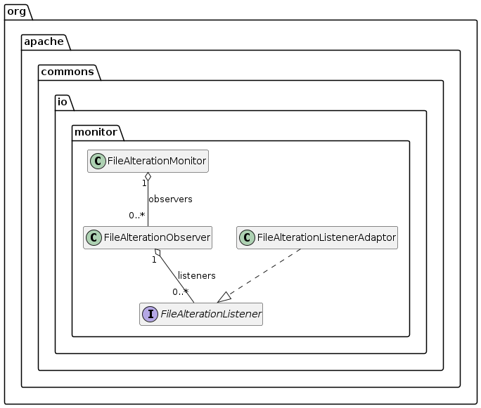

whitelistRegexp
Description
This configuration parameter defines a regular expression for all classes which should be part of the generated diagram text. It can not be combined with a blacklist regular expression or a list of packages to scan for. Therefore it can only be added to the constructor of the PlantUMLClassDiagramConfigBuilder class as a single parameter.
Example
Here is an example from the JUnit tests using this configuration parameter:
String filename = "class/0012_jar_whitelist.txt";
PlantUMLClassDiagramConfigBuilder configBuilder = new PlantUMLClassDiagramConfigBuilder(null,
"org\\.apache\\.commons\\.io.*FileAl.*").withHideFieldsParameter(true).withHideMethods(true); (1)
PlantUMLClassDiagramGenerator generator = new PlantUMLClassDiagramGenerator(configBuilder.build());
String result = generator.generateDiagramText();
String expectedDiagramText = IOUtils.toString(Objects.requireNonNull(classLoader.getResource(filename)), StandardCharsets.UTF_8);
assertNotNull(result);
assertNotNull(expectedDiagramText);
assertEquals(expectedDiagramText.replaceAll("\\s+", ""), result.replaceAll("\\s+", ""));which is rendered this way:

and produces this PlantUML diagram text:
@startuml
interface org.apache.commons.io.monitor.FileAlterationListener {
{method} {abstract} +onDirectoryChange ( paramFile1 : java.io.File ) : void
{method} {abstract} +onDirectoryCreate ( paramFile1 : java.io.File ) : void
{method} {abstract} +onDirectoryDelete ( paramFile1 : java.io.File ) : void
{method} {abstract} +onFileChange ( paramFile1 : java.io.File ) : void
{method} {abstract} +onFileCreate ( paramFile1 : java.io.File ) : void
{method} {abstract} +onFileDelete ( paramFile1 : java.io.File ) : void
{method} {abstract} +onStart ( paramFileAlterationObserver1 : org.apache.commons.io.monitor.FileAlterationObserver ) : void
{method} {abstract} +onStop ( paramFileAlterationObserver1 : org.apache.commons.io.monitor.FileAlterationObserver ) : void
}
class org.apache.commons.io.monitor.FileAlterationListenerAdaptor {
{method} +onDirectoryChange ( paramFile1 : java.io.File ) : void
{method} +onDirectoryCreate ( paramFile1 : java.io.File ) : void
{method} +onDirectoryDelete ( paramFile1 : java.io.File ) : void
{method} +onFileChange ( paramFile1 : java.io.File ) : void
{method} +onFileCreate ( paramFile1 : java.io.File ) : void
{method} +onFileDelete ( paramFile1 : java.io.File ) : void
{method} +onStart ( paramFileAlterationObserver1 : org.apache.commons.io.monitor.FileAlterationObserver ) : void
{method} +onStop ( paramFileAlterationObserver1 : org.apache.commons.io.monitor.FileAlterationObserver ) : void
}
class org.apache.commons.io.monitor.FileAlterationMonitor {
{field} {static} -EMPTY_ARRAY : [Lorg.apache.commons.io.monitor.FileAlterationObserver;
{field} -intervalMillis : long
{field} -running : boolean
{field} -thread : Thread
{field} -threadFactory : java.util.concurrent.ThreadFactory
{method} +addObserver ( paramFileAlterationObserver1 : org.apache.commons.io.monitor.FileAlterationObserver ) : void
{method} +getInterval () : long
{method} +removeObserver ( paramFileAlterationObserver1 : org.apache.commons.io.monitor.FileAlterationObserver ) : void
{method} +run () : void
{method} +start () : void <<synchronized>>
{method} +stop () : void <<synchronized>>
{method} +stop ( paramlong1 : long ) : void <<synchronized>>
}
class org.apache.commons.io.monitor.FileAlterationObserver {
{field} -comparator : java.util.Comparator
{field} -fileFilter : java.io.FileFilter
{field} -rootEntry : org.apache.commons.io.monitor.FileEntry
{field} {static} -serialVersionUID : long
{method} +addListener ( paramFileAlterationListener1 : org.apache.commons.io.monitor.FileAlterationListener ) : void
{method} -checkAndFire ( paramFileEntry1 : org.apache.commons.io.monitor.FileEntry , paramFileEntry;2 : [Lorg.apache.commons.io.monitor.FileEntry; , paramFile;3 : [Ljava.io.File; ) : void
{method} +checkAndNotify () : void
{method} -createFileEntry ( paramFileEntry1 : org.apache.commons.io.monitor.FileEntry , paramFile2 : java.io.File ) : org.apache.commons.io.monitor.FileEntry
{method} +destroy () : void
{method} -fireOnChange ( paramFileEntry1 : org.apache.commons.io.monitor.FileEntry , paramFile2 : java.io.File ) : void
{method} -fireOnCreate ( paramFileEntry1 : org.apache.commons.io.monitor.FileEntry ) : void
{method} -fireOnDelete ( paramFileEntry1 : org.apache.commons.io.monitor.FileEntry ) : void
{method} +getDirectory () : java.io.File
{method} +initialize () : void
{method} -listFileEntries ( paramFile1 : java.io.File , paramFileEntry2 : org.apache.commons.io.monitor.FileEntry ) : [Lorg.apache.commons.io.monitor.FileEntry;
{method} -listFiles ( paramFile1 : java.io.File ) : [Ljava.io.File;
{method} +removeListener ( paramFileAlterationListener1 : org.apache.commons.io.monitor.FileAlterationListener ) : void
{method} -sort ( paramFile;1 : [Ljava.io.File; ) : [Ljava.io.File;
{method} {static} -toComparator ( paramIOCase1 : org.apache.commons.io.IOCase ) : java.util.Comparator
{method} +toString () : String
}
org.apache.commons.io.monitor.FileAlterationListenerAdaptor ..|> org.apache.commons.io.monitor.FileAlterationListener
org.apache.commons.io.monitor.FileAlterationMonitor "1" o-- "0..*" org.apache.commons.io.monitor.FileAlterationObserver : observers
org.apache.commons.io.monitor.FileAlterationObserver "1" o-- "0..*" org.apache.commons.io.monitor.FileAlterationListener : listeners
hide fields
hide methods
@enduml